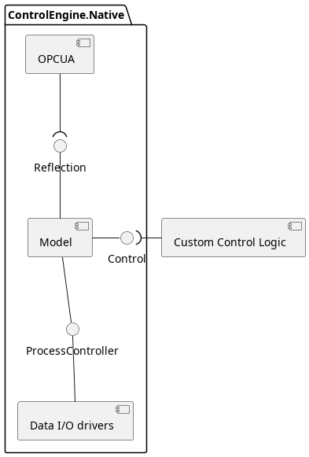
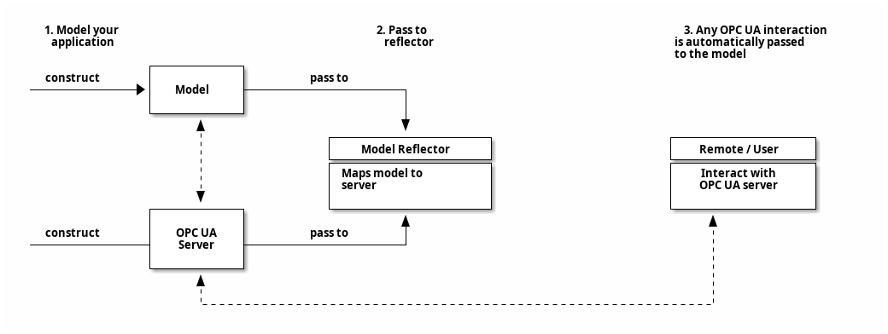

2. NOA and MTP Control Engines
If you are reading this documentation, you are properly in the process of writing a NOA or MTP application.
Though CENA is a collection of loosely coupled SDK components, it was designed to work by applying a software design pattern that we call the “Control Engine Pattern”. This pattern segments any application into the following domains:
The Model Core that contains the information/class model with their associated business logic
The Process Controller that handles any interaction with the physical by hosting Data Input/Output “drivers”
The Reflection component (OPC UA Server + Model Reflection class) that can expose the model contents to a client
The Control Logic that ties the information flow from the devices to the model together to form a unique, customer defined PEA or NOA Gateway

The core philosophy behind CENA is that you actually just want to add the custom logic to tie everything together and let CENAs libraries handle everything else.
2.1. Components of the ControlEngine pattern
2.1.1. The model component
Standardized information models like the MTP or PA-DIM are composed of several objects, which in addition to predefined attributes and class relations, they also contain “business logic”: Behavior that is specific to the class and defined by the specification.
Example for business logic are analog values in the MTP model: The are represented as a float, but they may also include high/low alarm/warning/tolerance signals (booleans) and range limitations that need to be handled when the value is updated.
The CENA information model cores are shipped as information model specific classes that include the business logic.
The user interacts with the model cores using a high-level API. The model core does the heavy lifting, including deciding when to invoke callbacks that drive process interaction.
2.1.2. ProcessController and Data Input/Output
The model core - MTP or NOA - usually has a rather simplified view of the physical process.
Here are two examples:
- Example 1
A MTP controlled PEA for example may be filled with dozens of valves - but from a PEA standpoint, there is only a hand full of valid configurations, like “DOSE”, “DRAIN”, “CLEAN” and “CLOSE”. That the model cores abstract the underlying hardware is actually quite beneficial: A process controller ensures that the model core can interact with the process in a simplistic manner, e.g. by providing a setValveConfiguration(DOSE|DRAIN|CLEAN|CLOSE)-function.
- Example 2
The PADIM model core of a NOA Security Gateway does not really care what protocol is used to leverage data. It will want to “detect” new devices, get notified if they are disconnected and read a fixed set of information in between. A process controller can use one or more protocols (HART, Profibus…) to provide e.g. std::list<devices> getNewDevices().
The process controller always abstracts the process and interaction with the physical world. Inside of course you will use specific Data I/O “drivers” to communicate with the devices… CENA provides several of these. Take a look at the list of available DataIO drivers in CENAs feature set.
2.1.3. The reflection component
The Reflection component exposes (parts of) the model component to control or monitoring systems, like the POL. The usual use-case is an OPC UA Server representing the model.
The reflection mechanism provided by the CENA ensures that you do not have to interact with the model or OPC UA (unless you want to). You simply construct the model and hand it and your OPC UA server instance to a Reflector-Class; this will take care of connecting the model core with the OPC UA server’s Nodes.
Attention
Currently, reflection is a one-time process: A Reflection class will take care of mapping a model to a server. Dynamic changes to the model, like modifying the model over OPC UA or deleting structures in both model and OPC UA, are on the roadmap, but not implemented yet.
2.1.4. The control component
The control engine is essentially what the API user supplies: It creates the model, reflects it using a provided server instantiates/configures drivers. It then reacts to changes in the model or the drivers (e.g. using callbacks).
The control component has 3 aspects to it:
Wrap the Model Core, Reflection mechanism and DataIO into a task-driven execution model
When triggered by the Model Core: Update the DataIO accordingly to perform operations as instructed by the model and provide feedback to it
When triggered by the Data IO components: Update the Model Core contents according to the source change
Attention
The control component is currently not implemented as a separate class in the API
2.2. A practical example
Take a look at our Control Engine Tutorial for a practical example on what an MTP PEA runtime application might look like.